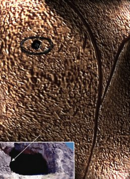
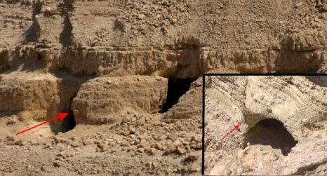
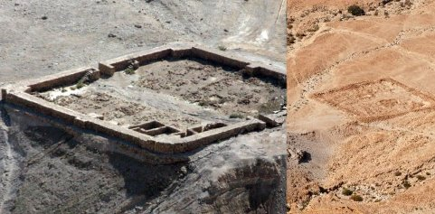
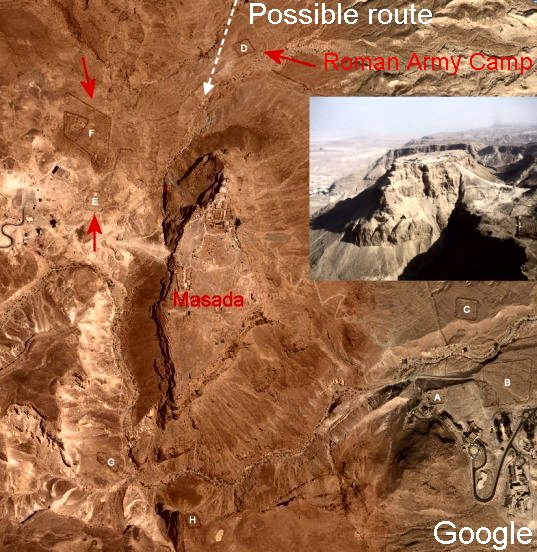
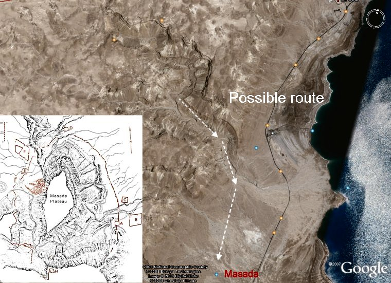
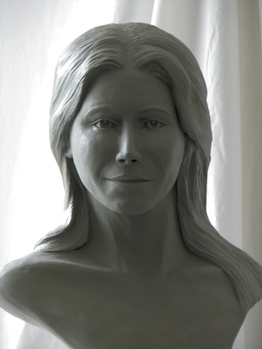
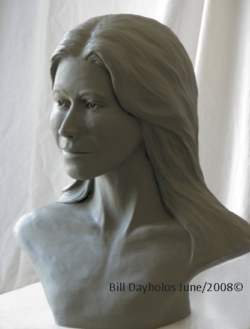

|
Sculptures Page 2 |
|
When Remote Viewing subjects of any kind you obtain much more information about the subject then just visual. It is as if the higher aspects of the subject are taking you for a guided tour and leaving you with messages they want you to have or see.
Mary Magdalene Chronology Notes (Personal sculpting notes)
May 27/07 Inquired about possible work with this individual. Explained my reason for inquiry (mainly the confusion in this time period of her role and status). Also asked for a visual of her for association purposes. Immediately received clear image of the bridge of her nose and forehead.
June 10/07 Saw pink flower with a human eye in the middle. This then shifted to a side profile and a closer view of the eye with the edge of the flower pedals showing. After the journey, I went on line and looked up flowers from her region to see if I could find the one I saw. It appeared somewhat like a rose with less pedals and more curl to the center pedals. Turned out to be Tulipa Agenensis – “Sun’s Eye Tulip”. (possible Ranunculus Millefolius, Nurrit Meturbetet, or Nerium Oleander). It appeared to be an important symbol that represented her.
July 1/07 Received very good images of her face and it looked somewhat of a cross between Egyptian and Jewish. Lighter skinned but toned. Small proportioned female nose – very “classical” attractive feminine look. She was projecting an age of being in her mid twenties.
I asked about the confusion today regarding her role in the biblical creation. I was shown a large limestone cliff face with a square shaped cave entrance. This shifted to the left and another cave entrance came into view. (Possible two similar cave entrances on same cliff wall.) Entered into the second cave and was shown on the left a limestone wall with two cracks in it. There was a slight billow to the stone on each side of the cracks. At first I thought I was being shown a stone symbol of a female lower torso. But it turned out to be an actual stone wall. I was informed that this natural shape became known as the “Woman’s spot”. To the left side of the stone crack was a symbol of an eye carved into the rock. This shifted to one with a flower symbol around it. I am uncertain of what aspect of the symbol remains on the wall or if it was the artist’s intent to create the final image (possibly completed or just a beginning of the carving). The “legs” of the natural crack pointed down to where she buried her documentation of the events. She was the self-proclaimed recorder of the places and events. The other 12 disciples had no interest in this task. She understood the importance and wanted to preserve it.
July 15/07 I saw an Egyptian faced statue and was given the suggestion that she was half Egyptian and half Israelite. There was resentment to this partnership with the Teacher (Jesus) for this woman was seen at the time as not “pure blooded”. Elders of the community started this resentment which contributed more to the already split between different factions of the faith. Jesus did not see their way as everyone was equal and pure in God’s creation. He was at the time, somewhat of a rebel, a “systems buster” in an ideological way.
Feb. 22/08 While doing a journey I was being “tapped on the shoulder” by someone. I allowed the energy to come in and it was Mary. A shadow image of her – beautiful woman with curly hair – (I have seen a similar female face of Jewish decent - this helps me a lot as a sculptor).
Contact was more of an information package advising me that these images (Remote Viewing) would not be this clear if I did not have some Soul Group connection to the targeted subject. I was shown her nose profile - not known at the time why but found out later it pertains to the connection I have with a person in my present life. I was informed that you need another set of eyes to see these images clearly. Remote Viewing is always possible but the clarity comes from having a common link to a person that was there at the time the subject lived. In this journey I was told that Mary balanced out Jesus’ “yin aspect”. She provided knowledge and energy for his understanding and interpretation of the feminine part of humanity. The other disciples felt this connection and the value it had for Jesus. There was jealousy in the ranks because of this. They all bid for his attention but she always had the most attention on many levels.
Mary Magdalene was a solid, balanced woman of average height for the day. She could be described as average to slimmer in frame. Her last comment was that “her cave is still there waiting to be discovered”. Referring to earlier contact information (June 19th). Final image of the journey - saw her in a white robe with a hood folded onto the back of her shoulders.
|
Sun’s Eye Tulip |
 Possible shape of cave entrance and the wall inside with the symbol by the cracks. |
|
March 30/08 Sunday journey – Saw Mary holding a new born baby in her arms, baby to her right. Mary was wearing a thick grayish colored garment with a hood. Baby was wrapped in a blanket of the same material. I got the impression or feeling that the environment they were in was cold.
April 6/08 I started the journey by seeing just Mary’s left eye from a 45 degree angle. I watched as this eye slowly closed. The eye and the orb area faded out into black. The eye placement was a little off center; to the left and up. Below this eye was a rotating fan shape. The blades were white with hazy edges. Each blade was shaped like a flattened banana with the concave part of the curve rotating into the counter clockwise direction. The hub of the blades (only five blades were visible at a time) was directly under the eye. Impression: that I was seeing another aspect of “time fazing”.
The scene shifted and I found myself (in and OBE state) “standing” on something and against a rock cliff. As soon as I recognized this I moved out into the limestone ravine ahead of me. I turned to the right and “flew” down the center of this ravine. On the left side of the ravine there was a sharp drop-off while the right was more gradual. I did not understand the significance of what was happening otherwise I would have paid more attention. I recall going around some bends but have no idea how many. I also have no idea of the distance traveled but it did not appear to be very many miles. The ravine opened up to a flat basin with a very large butte sticking out of it. I recognized it immediately as Masada. It was at that moment that I got excited for I knew where I was even if I wasn’t aware of the location of Masada, other than being in Israel. As I “sat” there motionless I asked; “show me the direction to Mary’s cave of records”. Instantly I found myself moving backwards and seconds later I was back to the starting edge of the cliff. It was at this point I could see I was standing at the entrance of a cave. The interesting part of this cave opening is that on the right side the rock juts out in a square shape (see pictures below). The jutting rock was only on the upper half of the right side.
Second journey that day produced more information on direction. I again found myself “flying” above and approaching the mouth of the ravine were I turned to the right and saw Masada again. Just prior to the end of this flight I saw a square shape on the ground built out of rocks. It stood out clearly against the desert background.
The next day I started with Google Earth and pieced together what I saw. The pictures below are the most accurate directions to the cave that I can provide at this point. The square shapes are old Roman army camps. The shape I saw was exactly square with two opposite mini walls at the centers. As you can see this symmetrical shape eliminates some of the camps.
I realize I run the risk of having people digging around the caves in the area but the message was very clear that the documents need to be found. The value is beyond comprehension and I believe someone out there has seen this cave and the symbols in the cave. I do not have the resources to search for this “treasure” myself but someone that is destined to find them will have the means.
April 13/08 More images, some of inner chambers, with the feeling that they are not in the country or area of modern Israel. |
|
  Top picture shows possible cave entrance shape. Second picture shows two of the Roman camp sites at Masada. |
|
  Pictures by Google Earth showing the Masada terrain and possible route I took from the cave. |
|
Please note That the above information is only as accurate as what a journey is. There are no limits to Out of Body journeys. This means that IF this Mary material is there it doesn’t mean that it is in your or this reality. As will be explained in “The Schematic of Time” book there are parallel realities and times. Our present and future may not be open enough to experience the need for this find. You see there is still as much value in understanding why the material can’t be found than in the material itself!
|

The only part of Mary that is not accurate is her hair. All the visions showed her with very curly hair. This type of hair is much too complicated for me to cast so I sculptured her with straight hair for convenience.
|
|
BACK
William Dayholos © June 2008
|